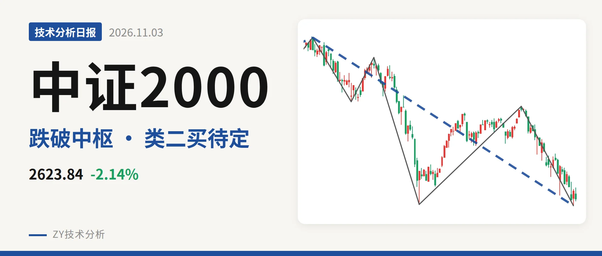
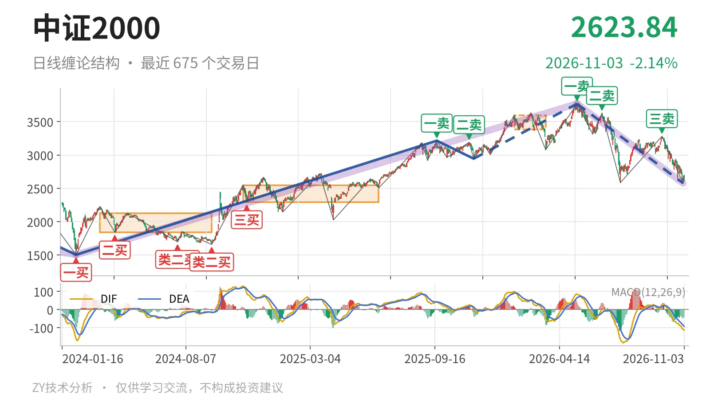

中证2000｜反抽未成笔，2576点暂守

最近日线中枢 3381.36—3593.19点，收盘位于中枢之下
一句话：日线下跌段未结束，2576点类二买暂定，反抽受3381点压制
📉 走势结构：5月14日以来的日线下跌段仍未结束
日线线段上，5月14日至11月2日的下跌段低见2576.02点，跌31.6%，尚未结束。更大级别里，2024年2月6日至2026年5月14日的上涨段仍保留150.6%的涨幅，但5月14日以来的回落已经跌去31.6%，说明这段日线上涨内部结构被破坏。11月3日单日最高2703.93点、最低2606.40点，收于2623.84点，只有一根K线，尚未构成日线反弹一笔，先看作下跌段中的弱反抽。

🧭 中枢与位置：跌破最近日线中枢，夹在前中枢上方
最近一个日线笔中枢是1月26日至3月23日的3381.36—3593.19点，最新收盘2623.84点低于下沿约22.4%。该中枢此前上移，但价格跌破后没有重新站回，上移结构已被破坏。下方参考2024年11月12日至2025年6月23日中枢的2293.12—2547.90点，当前价格仍在其上沿2547.90点上方约76点，处在前一个日线笔中枢上方、最近日线笔中枢下方的夹层里。
🔍 买卖点：日线卖点一个比一个低，线段类二买仍为暂定
日线笔级别上，5月14日一卖3768.08点、6月23日二卖3626.48点、9月22日三卖3280.29点，价格一个比一个低；9月22日三卖后指数继续跌至2576.02点，这些卖点对应日线级别下跌。线段级别里，11月2日低点2576.02点被列为类二买，但所在下跌线段5月14日至11月2日还没有结束，因此只能算暂定的类二买，若后续再创新低会随线段延续而改变。

⚖️ 背驰：价格创新低，DIF低点抬高但绿柱面积未缩
在5月14日以来的下跌段未结束前，比较最近两段同向下跌笔：6月23日至7月21日下跌笔跌28.7%，绿柱面积810，DIF低点-164.2；9月22日至11月2日下跌笔跌21.5%，绿柱面积873，DIF低点-108.5。后者低点2576.02点低于前者2585.35点，但DIF低点由-164.2抬到-108.5，绿柱面积反而从810增至873，不是典型的“新低不新弱”。因此2576.02点只是暂定类二买，没有出现充分背驰证据。
📐 关键位置观察：反抽不破3381点则三卖压力未解
后续反弹的第一道结构压力看3381点附近，也就是1月26日至3月23日中枢下沿3381.36点。若反抽不能回到3381点上方，对最近日线中枢仍构成三卖压力，反弹只能是下跌段中的反抽。下方关键位看2576点附近，若快速跌破2576.02点，11月2日的暂定类二买被破坏，5月14日以来的下跌段继续延伸。重新站上3381点，则下跌更可能只是对最近中枢的扩展。当前单日反抽尚未成笔，结构偏弱，弱在反弹受制于3381点、且背驰不充分。
⚠️ 本文为基于公开行情数据的缠论技术结构记录，由程序自动计算并生成，仅供学习交流，不构成任何投资建议。市场有风险，投资需谨慎。